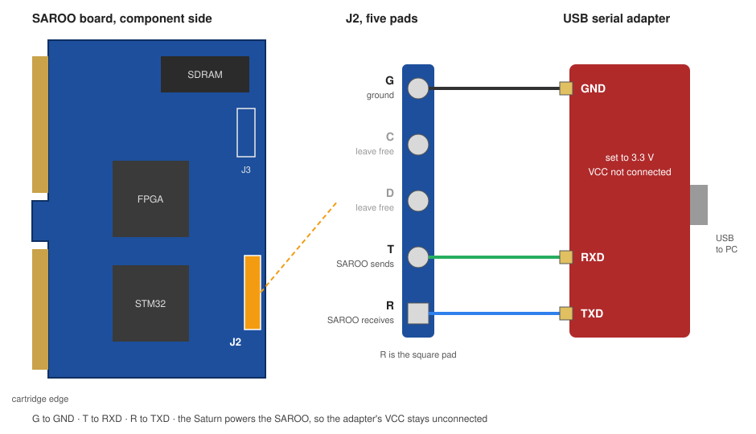

// Sega Saturn · SAROO · RetroAchievements
RAW-TURN
RetroAchievements on real Sega Saturn hardware — no emulator, no disc patch. A small addition to the SAROO firmware reads what an achievement set needs, every single frame, and your PC evaluates it as the game runs.
live signal path — one turn, one frame
the disc image is never changed
What it is
RAW-TURN connects a physical Sega Saturn, a SAROO cartridge and RetroAchievements. Achievements trigger from the actual console state, read from the Saturn's work RAM while you play. The game's disc image is never changed.
How it works
The Saturn's work RAM is not reachable from the cartridge slot, so nothing can simply listen in. Instead, a small addition to the SAROO firmware hooks in after the game's own vertical blank routine. Once per frame it reads the addresses the achievement set needs and hands every change to the SAROO, which passes it to your PC over a serial line. The PC evaluates the achievement conditions frame by frame.
Every frame, not now and then
Every change of every watched address is recorded, frame by frame. A value that holds for a single frame is still seen, so achievements that hinge on a short moment unlock as they should.
The game names itself
When the SAROO loads a disc image, it reports the disc header to the PC. The program works out the game and its RetroAchievements set from that. Nothing to select, no folder to point at.
One click on the SD card
The program takes the official SAROO firmware v0.9 and applies its patches on your PC, from your card or straight from the SAROO release page. It ships no SAROO files itself. The FPGA stays the official one, so there is no firmware update to run, and Restore original puts back what was there before.
Save states, no menu in the way
L + R + Down saves a quick state at once; the last ten are kept. Four more slots, and loading of every state, are in the program window, with date, time and play time. There is no in-game menu on purpose: drawing over a running Saturn game can hang it, and RAW-TURN must never do that.
Wiring
A USB-to-serial adapter set to 3.3 V goes onto the five pads marked G C D T R on the SAROO board: G to ground, T to the adapter's RXD, R to the adapter's TXD. C and D stay free. The full guide is in WIRING.md.

Hardcore mode
Not available yet
Every unlock is recorded as Softcore.
Known limits
A save state restores work RAM and video memory, but not the sound processor and not the state of the CD emulation. Loading works best within the same scene of a game. The first time a game runs, the program prepares it; the achievements count from the next start of that game on.
Requirements
- Cartridge
- SAROO with STM32H750, tested on V1.66
- Console
- Original Sega Saturn hardware
- Connection
- USB-to-serial adapter, 3.3 V, on the SAROO board
- Platform
- Windows
- Account
- Free RetroAchievements account
Download
RAW-TURN
Unpack, double-click, done. A single executable, nothing to install. Firmware patcher, automatic game detection, achievement list, unlock card with badge, save states, live values, English and German.
Latest release ›Setup instructions are on GitHub.
See it running
A real Saturn with a SAROO and the serial adapter, then Sonic Jam on that console. The achievement only holds for a brief moment; it is caught because every frame is read, and the unlock card slides up in the program window.